直近1週間の更新
10/10 (土)


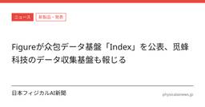
Figureが众包データ基盤「Index」を公表、觅蜂科技のデータ収集基盤も報じる 日本フィジカルAI新聞
leaderobot.comは2026年10月10日、「Figureが众包データ基盤「Index」を公表、觅蜂科技のデータ収集基盤も報じる」と報じた。
1時間前

フィックスターズがロボティクス拠点を支援 日本フィジカルAI新聞
フィックスターズは8月25日、Qualcomm Japan Robotics Centerを設立当初からパートナー企業として支援すると発表した。
2時間前
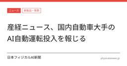
産経ニュース、国内自動車大手のAI自動運転投入を報じる 日本フィジカルAI新聞
産経ニュースが、国内自動車大手がマイカー向けのAI自動運転を続々投入すると報じた。報道の核は、一般向け車両でほぼ手放し運転をうたう流れが広がる点にある。詳細は原典を参照されたい。
2時間前

小型ドローン向け触覚センサー 日本フィジカルAI新聞
WIRED.jpは、オランダのデルフト工科大学の研究チームが小型ドローン向けの触覚センサーを開発したと報じた。暗い場所や煙の中など、従来のセンサーが使いにくい環境での利用を想定している。
5時間前

智元が愛仕達との取り組みを公表 日本フィジカルAI新聞
智元創新（上海）科技股份有限公司は2026年10月10日、公式サイトで「智元霊犀X2携手爱仕達，交出百店零售增長答卷」と題する記事を掲載した。
5時間前
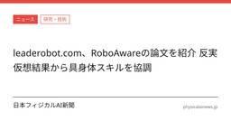
leaderobot.com、RoboAwareの論文を紹介 反実仮想結果から具身体スキルを協調 日本フィジカルAI新聞
論文は、具身エージェントがモジュール型のロボット技能と凍結されたエンドツーエンド方策を組み合わせる際の、方策選択の難しさを扱う。詳細な手法と実験設定は原典論文の確認が必要である。
6時間前
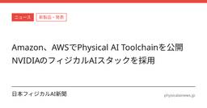
Amazon、AWSでPhysical AI Toolchainを公開 NVIDIAのフィジカルAIスタックを採用 日本フィジカルAI新聞
Amazonは2026年10月8日、AWS上でオープンソースの「Physical AI Toolchain」を公開した。同ツールチェーンはNVIDIAのフィジカルAIスタックを用い、産業自動化、自律移動、ヒューマノイド向けを対象とする。本紙の過去報道で見えていた「現場導入」や開発基盤整備の流れが、ツール群の開放という形で一段進んだ構図だ。
6時間前
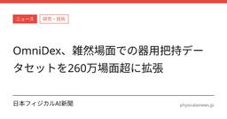
OmniDex、雑然場面での器用把持データセットを260万場面超に拡張 日本フィジカルAI新聞
arXivに10月8日付で投稿された論文「OmniDex: Scaling Dexterous Hand Grasping to Diverse Cluttered Scenes」は、器用把持の学習データ不足に対する取り組みを示した。論文は、260万超の場面と4億件の場面特化型把持真値を含む基準を構築したとしている。学習モデルOmniDexは、後処理なしで雑然場面での頑健な器用把持を目指す設計だという。
6時間前
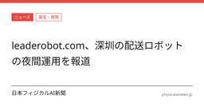
leaderobot.com、深圳の配送ロボットの夜間運用を報道 日本フィジカルAI新聞
leaderobot.comが10月10日、深圳で配送ロボットが夜間にも運用されている様子を報じた。報道では、Neolix Technologies Co.の無人配送車が深夜帯に農産物を積んで走行したとされる。夜間配送をめぐる技術課題と運用条件が焦点になる。
6時間前
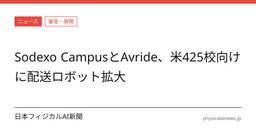
Sodexo CampusとAvride、米425校向けに配送ロボット拡大 日本フィジカルAI新聞
Vending Market Watchは、Sodexo CampusとAvrideが自律型ロボット配送の拡大に向けた合意を結んだと報じた。
6時間前
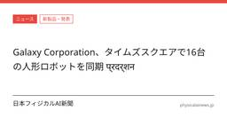
Galaxy Corporation、タイムズスクエアで16台の人形ロボットを同期 प्रदर्शन 日本フィジカルAI新聞
Galaxy Corporationが、ニューヨークのタイムズスクエアで16台の人形ロボットによる同期パフォーマンスを行ったと報じられた。この演出はK-popとロボット技術を組み合わせたデモンストレーションとされ、国連の国際平和デーに関する活動の一環だった。同社はフィジカルAIとロボティクスへの拡張を進めており、公共空間での人形ロボット活用を示す狙いがあったとしている。
7時間前
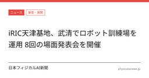
iRIC天津基地、武清で場面発表会8回 日本フィジカルAI新聞
leaderobot.comによると、武清開発区のiRIC天津基地は2025年8月の立ち上げ以降、天津で具身知能の応用場面発表会を8回開いた。
7時間前
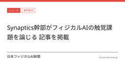
Synaptics幹部がフィジカルAIの触覚課題を論じる 記事を掲載 日本フィジカルAI新聞
EET Chinaが10月9日付で、Synaptics上級副社長Satish GanesanによるフィジカルAIの触覚に関する記事を掲載した。記事は、視覚や言語の進展に比べて、フィジカルAIでは触覚がなお制約になっているという論旨を扱う。本紙の関連記事では、Synapticsをめぐってonsemiによる買収合意が6月30日に報じられている。
7時間前
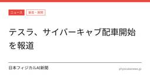
テスラ、サイバーキャブの配車開始を日経クロステックが報道 ハンドル・ペダルなしのE2E自動運転 日本フィジカルAI新聞
テスラがサイバーキャブの配車を始めたと、日経クロステック（xTECH）が2026年10月8日に報じた。報道では、車両はハンドルとペダルを持たず、E2E自動運転を前提にしているという。本件は、テスラの自動運転車を量産・運用の段階にどう近づけるかが焦点になる。
8時間前
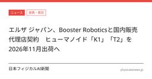
エルザ ジャパン、Booster Roboticsと国内販売代理店契約 ヒューマノイド「K1」「T2」を2026年11月出荷へ 日本フィジカルAI新聞
株式会社 エルザ ジャパンはBooster Roboticsと国内販売代理店契約を締結した。取り扱い対象はヒューマノイド「Booster K1」と「Booster T2」で、出荷開始は2026年11月予定である。同社はGPUサーバーや高性能ワークステーションに加え、身体性AI向けロボットの国内展開を加える。
9時間前
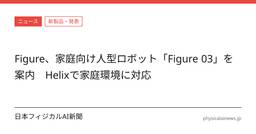
Figure、家庭向け人型ロボット「Figure 03」を案内 Helixで家庭環境に対応
日本フィジカルAI新聞
Figureはウェブサイト上で、一般用途の人型ロボット「Figure 03」を案内した。Helixを使い、予測しにくく変化する家庭環境を移動することをうたう。同社は、家庭作業を人のように扱うと説明している。公開文面からは、量産台数や導入時期は読み取れない。
10時間前
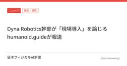
Dyna Robotics幹部が「現場導入」を論じる humanoid.guideが報道 日本フィジカルAI新聞
humanoid.guideが2026年10月10日、Dyna Roboticsの共同創業者兼Chief ScientistであるJason Ma氏の発言を報じた。記事は、研究室外でのロボット導入をどう進めるかを主題としている。詳細は原典を参照されたい。
11時間前
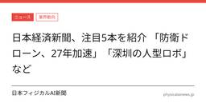
日本経済新聞、注目5本を紹介 「防衛ドローン、27年加速」「深圳の人型ロボ」など 日本フィジカルAI新聞
日本経済新聞が「防衛ドローン、27年加速」「深圳の人型ロボ」など注目5本を紹介した。記事は見出し上、複数のテーマを並べた特集紹介であり、個別の詳細は元記事側の確認が必要だ。公開情報だけでは、各テーマの中身や数値の比較はできない。
11時間前
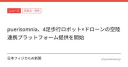
puerisomnia、4足歩行ロボット×ドローンの空陸連携プラットフォーム提供を開始 日本フィジカルAI新聞
puerisomniaが、4足歩行ロボットとドローンを組み合わせた空陸連携プラットフォームサービスの提供開始を発表した。導入対象として、自治体と企業を募集するとしている。公表資料では、サービス内容の具体的な運用規模や導入条件の詳細は読み取れない。
11時間前
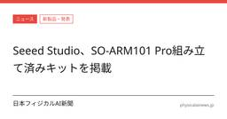
Seeed Studio、SO-ARM101 Pro組み立て済みキットを掲載 日本フィジカルAI新聞
Seeed Studioは、LeRobot対応の6自由度ロボットアーム「SO-ARM101 Pro Assembled Kit」を紹介するページを掲載した。
11時間前
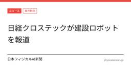
日経クロステックが建設ロボットを報道 日本フィジカルAI新聞
日経クロステック（xTECH）が建設ロボットを報じた。主ソースはインタビュー・コラム・論説にあたり、一次情報は付されていない。詳細は原典を参照する必要がある。
12時間前
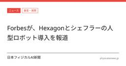
Forbesが、Hexagonとシェフラーの人型ロボット導入を報道 日本フィジカルAI新聞
Forbesが、Hexagonがシェフラー工場に1,000台の人型ロボットを投入する計画を報じた。主題は、単発導入ではなく量産・展開を前提にした運用設計にあるとみられる。詳細は原典を参照されたい。
14時間前
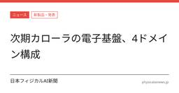
次期カローラの電子基盤、4ドメイン構成 日本フィジカルAI新聞
日経クロステックは、トヨタ自動車の次期カローラに関する記事を掲載したと報じた。記事では、電子基盤を4ドメイン構成とする内容が伝えられた。テスラとは異なる設計方針として紹介された。
15時間前
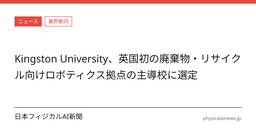
Kingston University、英国初の廃棄物・リサイクル向けロボティクス拠点の主導校に選定 日本フィジカルAI新聞
Kingston Universityが、英国初の廃棄物・リサイクル向けロボティクス導入ハブの主導校に選ばれた。
16時間前
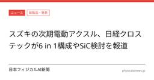
スズキの次期電動アクスル、日経クロステックが6 in 1構成やSiC検討を報道 日本フィジカルAI新聞
日経クロステック（xTECH）が、スズキの次期電動アクスルに関する報道を掲載した。報道では、6 in 1構成や軽EV向けのSiC検討、「重希土類フリー」に触れている。詳細は原典を参照されたい。
16時間前